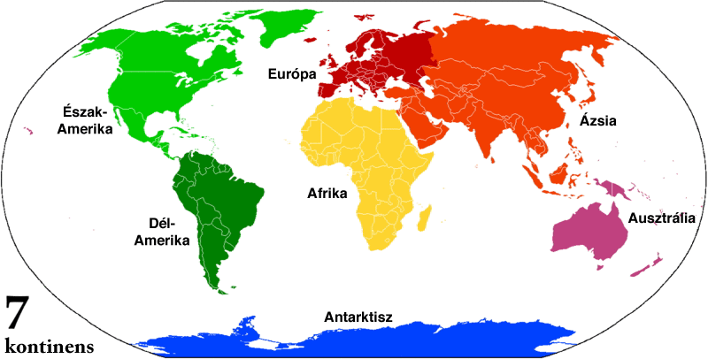

Főoldal
Kvízek
Oldalak földrajz érettségi felkészüléshez:
atlasz középiskolásoknak
atlasz
PRO Tipp: az atlaszban sok minden megtalálható.
Kontinensek: Észak-Amerika, Dél-Amerika, Európa, Afrika, Ázsia, Ausztrália, Antarktisz
 forrás: wikipedia.org